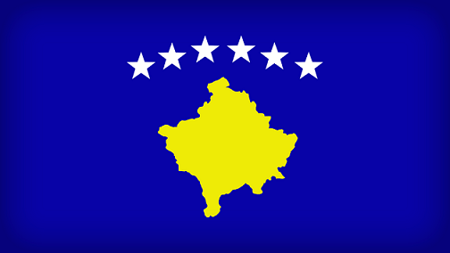

Kosovo (Albanian: Kosova or Kosovë is a disputed territory and partially recognised state in Southeast Europe that declared independence from Serbia in February 2008 as the Republic of Kosovo. Kosovo is landlocked in the central Balkan Peninsula. Its capital and largest city is Pristina. It is bordered by the Republic of Macedonia and Albania to the south, Montenegro to the west, and the uncontested territory of Serbia to the north and east. While Serbia recognises administration of the territory by Kosovo's elected government,[14] it still continues to claim it as its own Autonomous Province of Kosovo and Metohija.

Prishtina
Pristina, also spelled Prishtina (Albanian: Prishtinë, is the capital and largest city of Kosovo.[a] It is the administrative center of the homonymous municipality and district.
Preliminary results of the 2011 census put the population of Pristina at 198,000.[5] The city has a majority Albanian population, alongside other smaller communities. It is the administrative, educational, and cultural center of Kosovo. The city is home to the University of Pristina and is served by Pristina International Airport.